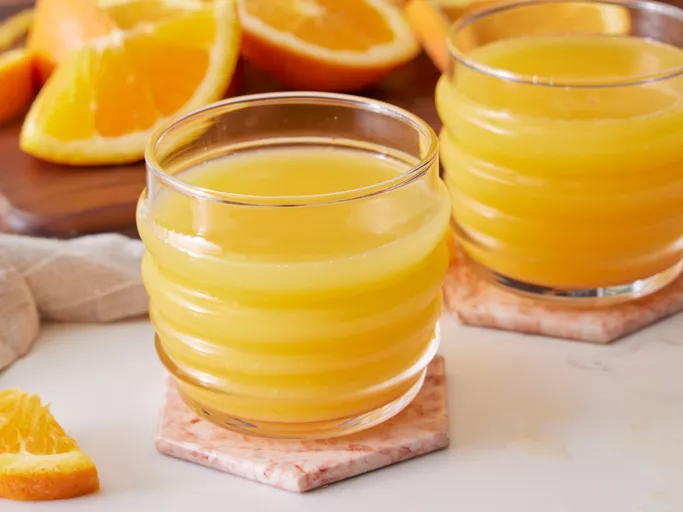

Orange juice

Description
Orange juice is a popular beverage made by extracting the juice from fresh oranges. It is known for its bright,tangy
and slightly sweet flavor, which is refreshing.
Ingredients
Steps
- Choose ripe oranges. Valencia or Navel oranges are popular choices.
- Place the oranges on a cutting board and cut them in half crosswise with a knife.
- Place the orange on the juicer reamer and press down while twisting it to extract the juice.
- If you prefer pulp-free juice, pour the freshly squeezed juice through a strainer to a glass
- Pour the juice into a glass and enjoy it fresh.